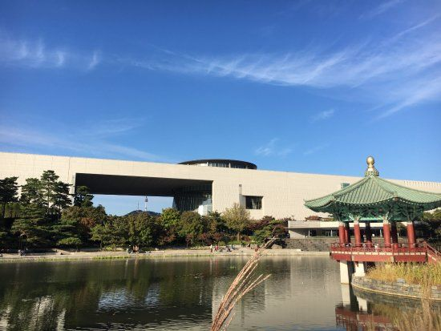

Korean contemporary lifestyle is the evolution of traditions that have developed and transformed for more than a millennia. Influenced by the natural world, Korean lifestyle demonstrates the impeccable balance of nature's offerings into functional – yet beautiful – forms and uses. Traditions and nature have shaped Korean lifestyle into what it is today.
Korean culture is having a serious moment in the global spotlight. First, there was a surge in interest in the K-Pop music genre, and now K-fashion is having its turn, too. Seoul’s fashionable youth have caught the world’s attention with their unique contemporary styles, largely inspired by street style fashions and urban wear. With tonnes of promising fashion talent popping up in the city, and Seoul Fashion Week expanding season on season, it’s becoming increasingly apparent why Seoul has gained a reputation as East Asia’s leading fashion capital. South Korea might be more conservative than you’re used to. Practice modesty as much as possible. For women, this means avoiding low-cut tops or tank tops that expose the shoulders. Short skirts aren’t as frowned upon, but be sure to bring a silk wrap to cover your legs when seated. Men, likewise, should avoid walking around without a shirt in public.But these days, more fashion hubs are forming all over the world to challenge those cities. Among them is South Korea’s capital, Seoul. It hosts a wildly popular fashion week twice a year. Fashion has always been a part of Korean culture, but it’s never been as big (or popular) as it is now. Its designers are gaining more and more worldwide exposure and as for the general public in Seoul and elsewhere in Korea? They are known for their impeccable fashion sense in everyday life, both men and women.
Though this particular style isn’t limited to those hanging out in the Hongdae area, it is the most common. In general, it’s more common among those in their early twenties. It is a sort of a relaxed street look, mixing together the aesthetics of rock and hip hop. Especially the top part is often oversized or baggy, though men also like relaxed fit pants and shorts to go with it. While it’s a very unisex look, girls do wear dresses and skirts that go well with the look, as well. Girls also typically like to mix more colors into their outfits instead of sticking to predominantly black each and every time.
it is expected of women to act and look pure, or at least classy. What this entails is that it is frowned upon for Korean women to dress too revealing, especially in the top part.Of course, the rules on this are getting more lax as Korean fashion and the trends for Korean women evolve. Though you still won’t see many women wearing backless tops or tank tops, many are in love with off shoulder and cold shoulder tops these days. And while the chest area remains covered, crop tops have become a big trend. They’re especially popular to mix with high waisted pants, shorts, and skirts.On the other hand, going mini in the lower body has absolutely been a trend in Korea for many years. And there doesn’t seem to be a change happening any time soon! Mini skirts, short shorts, and mini dresses are definitely in. Unfortunately, it poses a problem for those girls with slightly wider hips or bigger butts, as the hem cuts might be even too short for them to wear. But while Korean women love to show their legs, they do usually wear undershorts
Seoul Fashion Week (each March and October)
Simone Handbag Museum
COEX mall
As the largest underground shopping mall in Asia, COEX Mall has got everything you need, all in one place. Shopaholics and fashionistas will appreciate the hundreds of clothing and accessories stores carrying both domestic brands and international brands, as well as designer and luxury brands. The dining options are endless with the many restaurants and cafes that are available here. The Megabox Cineplex, one of Korea's largest movie theater chains, is also located here, with a total of 17 screens. Other popular attractions at the mall include the Kimchi Museum, the COEX Aquarium, the ASEM Plaza and the Event Court, where various performances and exciting events, such as classical concerts, mini concerts, and magic shows are offered every week. COEX Mall is generally considered to be one of the best places to go for shopping. The stores in the multi-fashion square feature trendy fashions targeted at younger customers, but there are plenty of shops geared towards people of all ages. The square is also connected to Hyundai Department Store, offering even more items to choose from. There are various ways to enjoy COEX Mall. You can enjoy shopping at COEX whether you've got money to blow or are just passing by for some window-shopping. If you are out with children, a great place to go would be the Aquarium, which also features a play area and Kids Aquarium in addition to the main aquarium. The Kimchi Museum is great for an educational experience and tourists who want to learn more about the history of Korea's most famous dish. Have fun for free at one of the many free exhibitions held throughout the year, or get rid of your change at the video arcade.Gangnam
 "THE BEVERLY HILLS OF SOUTH KOREA" Gangnam is the the richest district in Seoul, south of the Han River, which cuts through the center of the city. It is one of many bridges in the city that connects Gangnam with the neighborhoods north of the Han, including downtown.
"THE BEVERLY HILLS OF SOUTH KOREA" Gangnam is the the richest district in Seoul, south of the Han River, which cuts through the center of the city. It is one of many bridges in the city that connects Gangnam with the neighborhoods north of the Han, including downtown.
N Seoul Tower
 Built on a 262 meter peak in Namsan Park, the tower reaches to 480 meters above sea level. When the weather and pollution levels cooperate, visiting the observation tower (370 meters above sea level) allows you to view the entire city and surrounding areas.Namsan Seoul tower or Seoul tower or the radio tower is a popular tourist spot in the heart of Seoul, close to Myeongdong. It is located on top of a mountain and is accessible by road/cable car/a hike. Prefer going in the evening to catch a glimpse of sunset & night time of Seoul.
However, it gets crowded & boarding a cable car would be a long wait. A whole lot of love padlocks are put up in the rails & it was mind blowing to see them locked for years together.
Built on a 262 meter peak in Namsan Park, the tower reaches to 480 meters above sea level. When the weather and pollution levels cooperate, visiting the observation tower (370 meters above sea level) allows you to view the entire city and surrounding areas.Namsan Seoul tower or Seoul tower or the radio tower is a popular tourist spot in the heart of Seoul, close to Myeongdong. It is located on top of a mountain and is accessible by road/cable car/a hike. Prefer going in the evening to catch a glimpse of sunset & night time of Seoul.
However, it gets crowded & boarding a cable car would be a long wait. A whole lot of love padlocks are put up in the rails & it was mind blowing to see them locked for years together.
Lotte World
 Opened in 1989, Lotte World Adventure is a major recreation complex located in downtown Seoul. It consists of Indoor Adventure, the world's largest indoor theme park, an outdoor theme park called Magic Island, a luxury hotel, the Korean Folk Museum, shopping malls, department stores, sports facilities and a movie theater, all in one place. Indoor Adventure is the world’s largest indoor theme park and hosts a dazzling variety of seasonal festivals and parades all year round and features 22 different rides. Magic Island, the outdoor theme park of Lotte World, is an artificial island located in the middle of Seokchon Lake and boasts 17 different rides including the high-altitude free-fall thrill ride, the Gyro Drop.
Opened in 1989, Lotte World Adventure is a major recreation complex located in downtown Seoul. It consists of Indoor Adventure, the world's largest indoor theme park, an outdoor theme park called Magic Island, a luxury hotel, the Korean Folk Museum, shopping malls, department stores, sports facilities and a movie theater, all in one place. Indoor Adventure is the world’s largest indoor theme park and hosts a dazzling variety of seasonal festivals and parades all year round and features 22 different rides. Magic Island, the outdoor theme park of Lotte World, is an artificial island located in the middle of Seokchon Lake and boasts 17 different rides including the high-altitude free-fall thrill ride, the Gyro Drop.
National Museum of Korea
As a living vestige of Korea's history and culture, The National Museum of Korea is home to today's best collection of history and culture deeply rooted within the Korean people. Regular exhibitions and education programming speak of the numerous anecdotes of the nearly 420,000 collected historical artifacts with thousands of years of history, while also offering realistic digital animations and VR technology to provide a more impactful experience. The museum includes everything from a simple hand axe of the Paleolithic Period and a magnificient golden crown of the Three Kingdoms Period to Goryeo Period celadons, or pottery, and paintings dating back to the Joseon Period, as well as pictures of modern-era Korea and a variety of other zones dedicated to different cultures throughout the globe. Bring your family, friends, or even that special someone over to the museum for a day of fascination amid a compilation of detailed and colorful history.Banpo Bridge
Namdaeman Market
 Namdaemun Market is the largest traditional market in Korea with over 10,000 stores that line the streets around Namdaemun (Gate), the main southern gate of the old city wall. Namdaemun Market first started under the reign of King Taejong (1367 – 1422, the third Joseon king) during the Joseon Dynasty (1392 – 1910), when the government built shops around Namdaemun and rented out the shops to traders. It boasts one of the largest distribution structures in Korea, providing local products, daily living essentials, food products, medical supplies and more to retailers and consumers across the country.
Due to the wholesale nature of the market, shoppers can comparison shop for the lowest prices on all sorts of goods. Namdaemun Market is also packed with interesting things to see and eat, making it a popular destination for both locals and international visitors alike. So whether you’re looking for traditional oriental medicine or imported drugs, traditional Korean food or imported snacks, hanbok attire or a Halloween costume, Namdaemun Market is the place to go.
Namdaemun Market is renowned for its vast size and the variety of goods it offers. With the exception of construction materials, the market sells nearly every item under the sun including clothing, food, living essentials, etc. So it comes as no surprise that Namdaemun Market is always bustling day and night. Retailers from all over the nation flock to the market at night and local consumers flock to the market during the day. Many tourists come during the day as well to experience the charm of a traditional Korean market. The market's success is largely due to its independent distribution system. Although the shops are small, most of them produce the goods they offer themselves, allowing for customers to purchase goods directly from the manufacturers at wholesale prices.
Namdaemun Market is the largest traditional market in Korea with over 10,000 stores that line the streets around Namdaemun (Gate), the main southern gate of the old city wall. Namdaemun Market first started under the reign of King Taejong (1367 – 1422, the third Joseon king) during the Joseon Dynasty (1392 – 1910), when the government built shops around Namdaemun and rented out the shops to traders. It boasts one of the largest distribution structures in Korea, providing local products, daily living essentials, food products, medical supplies and more to retailers and consumers across the country.
Due to the wholesale nature of the market, shoppers can comparison shop for the lowest prices on all sorts of goods. Namdaemun Market is also packed with interesting things to see and eat, making it a popular destination for both locals and international visitors alike. So whether you’re looking for traditional oriental medicine or imported drugs, traditional Korean food or imported snacks, hanbok attire or a Halloween costume, Namdaemun Market is the place to go.
Namdaemun Market is renowned for its vast size and the variety of goods it offers. With the exception of construction materials, the market sells nearly every item under the sun including clothing, food, living essentials, etc. So it comes as no surprise that Namdaemun Market is always bustling day and night. Retailers from all over the nation flock to the market at night and local consumers flock to the market during the day. Many tourists come during the day as well to experience the charm of a traditional Korean market. The market's success is largely due to its independent distribution system. Although the shops are small, most of them produce the goods they offer themselves, allowing for customers to purchase goods directly from the manufacturers at wholesale prices.
Changdeokgung
Cheonggyecheon Stream
 Cheonggyecheon Stream starts from Cheonggye Plaza, just off Sejong-ro Avenue. Cheonggye Plaza roughly covers an area of 2,500 square meters, and is located at the starting point of Cheonggyecheon Stream. The square, created based on the design of traditional Korean bojagi (a colorful wrapping cloth), features the elegant beauty of traditional stonework that is colorful yet refined. The plaza also includes a model of Cheonggyecheon that provides visitors with a bird's-eye view of the restored Cheonggyecheon Stream. At the plaza, there are plaques that provide detailed commentaries on the 22 bridges that span the stream, as well as a number of graceful fountains that add to the ambience of the area. The area commemorates the Cheonggyecheon Stream Restoration Project, and also symbolizes gathering, harmony, peace, and unity.
After the completion of Cheonggye Plaza, Seoul Metropolitan Government designated the area as a vehicle-free zone on holidays, providing more leisure space for pedestrians. Since then, the waterfront areas of Cheonggyecheon Stream, and the surrounding streets have become popular places for those seeking refreshment and a variety of cultural experiences. A favorite of many is the Candle Fountain, which features the magnificent synchronicity of three different lighting fixtures and a four-meter-high, two-tiered waterfall. Along the two sides of the waterfall are the Palseokdam wishing wells, made of eight different stones from each of the nation's eight provinces.
Cheonggyecheon Stream starts from Cheonggye Plaza, just off Sejong-ro Avenue. Cheonggye Plaza roughly covers an area of 2,500 square meters, and is located at the starting point of Cheonggyecheon Stream. The square, created based on the design of traditional Korean bojagi (a colorful wrapping cloth), features the elegant beauty of traditional stonework that is colorful yet refined. The plaza also includes a model of Cheonggyecheon that provides visitors with a bird's-eye view of the restored Cheonggyecheon Stream. At the plaza, there are plaques that provide detailed commentaries on the 22 bridges that span the stream, as well as a number of graceful fountains that add to the ambience of the area. The area commemorates the Cheonggyecheon Stream Restoration Project, and also symbolizes gathering, harmony, peace, and unity.
After the completion of Cheonggye Plaza, Seoul Metropolitan Government designated the area as a vehicle-free zone on holidays, providing more leisure space for pedestrians. Since then, the waterfront areas of Cheonggyecheon Stream, and the surrounding streets have become popular places for those seeking refreshment and a variety of cultural experiences. A favorite of many is the Candle Fountain, which features the magnificent synchronicity of three different lighting fixtures and a four-meter-high, two-tiered waterfall. Along the two sides of the waterfall are the Palseokdam wishing wells, made of eight different stones from each of the nation's eight provinces.